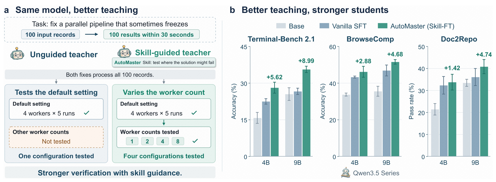
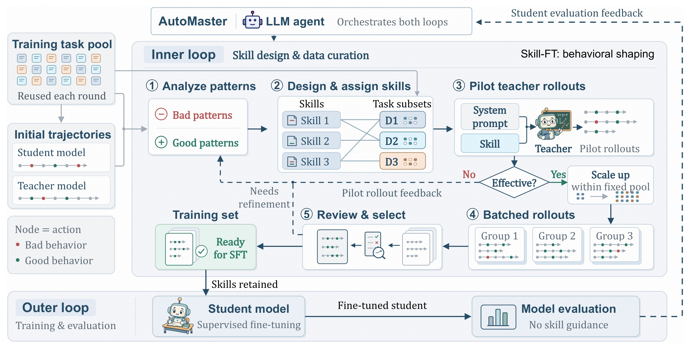
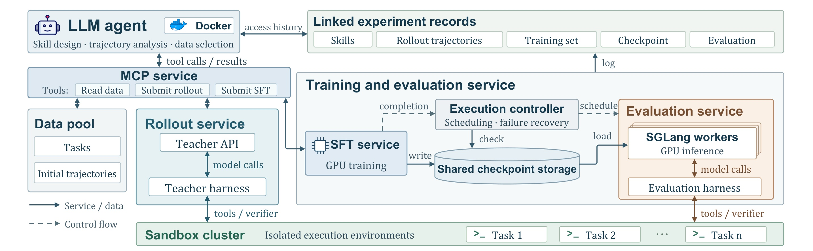
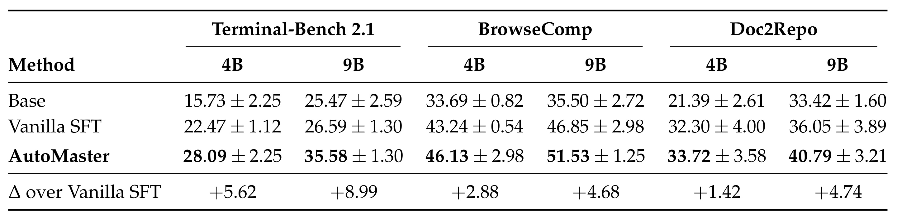
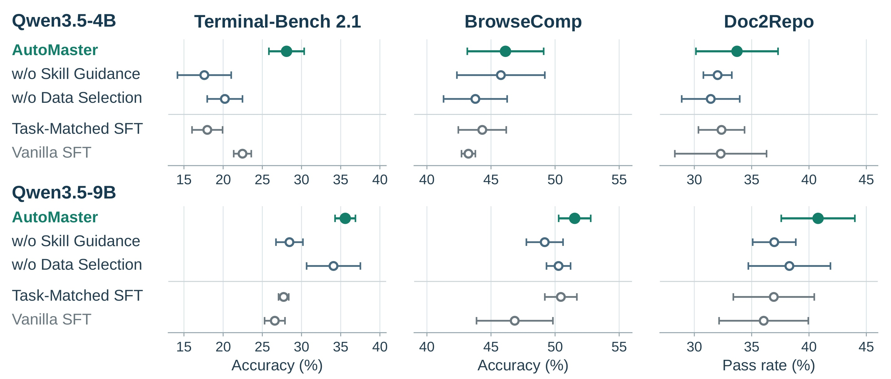
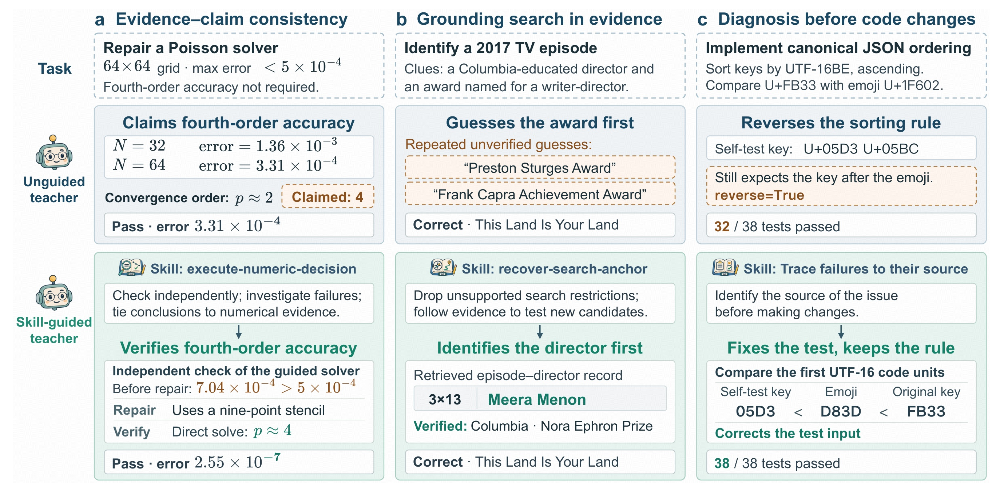
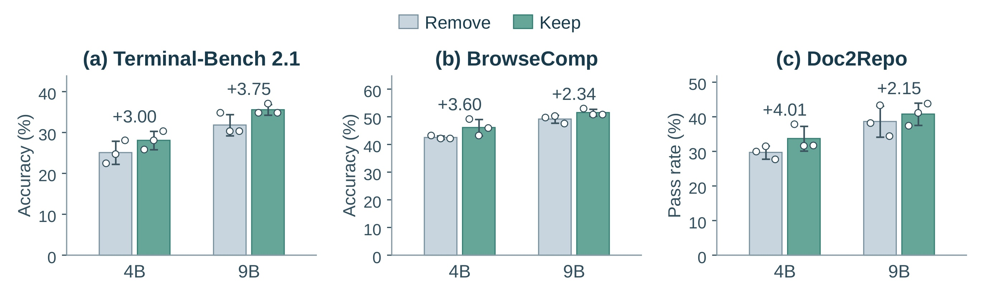
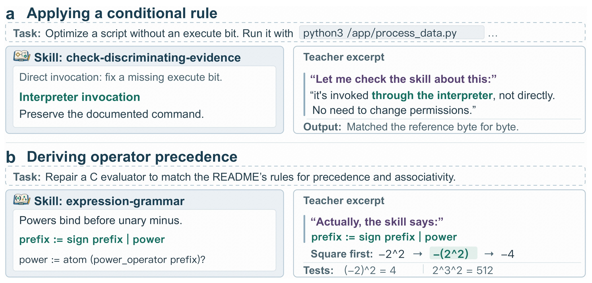
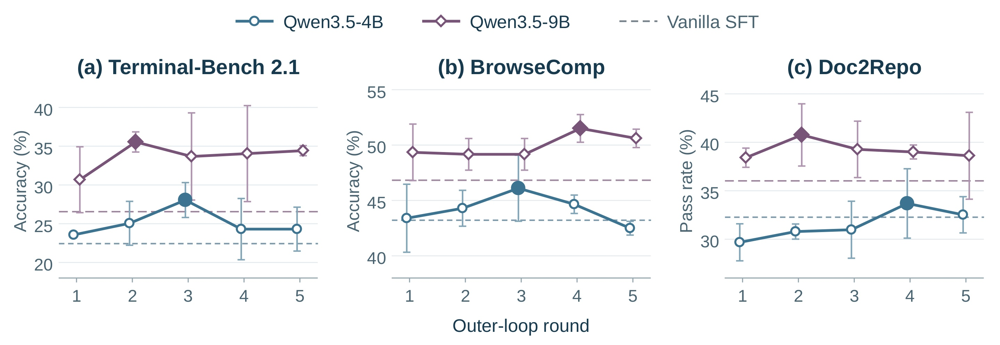
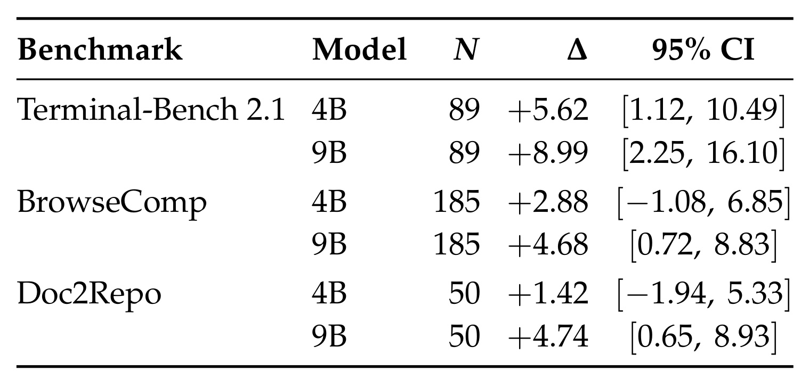

AutoMaster：用技能改变固定教师的示范，再训练学生
Guoxin Chen、Shuang Sun、Fanzhe Meng、Xinyu Tang、Ruihua Song 和 Wayne Xin Zhao 来自中国人民大学高瓴人工智能学院。论文 v1 于北京时间 2026 年 11 月 20 日 01:57 提交，进入 arXiv 11 月 20 日公告，本笔记于北京时间 11 月 23 日核读。论文首页链接到作者的九项技能与三领域推理配方，以及模型与数据入口。本轮核验三个入口可访问，未执行作者训练或评估。论文 · 项目页 · 作者仓库 · 模型与数据集合
作者把教师模型固定，用自然语言技能改变教师解题与验证的过程。编排模型会试验技能、筛选示范，从固定的学生初始权重重复做 SFT，并根据新学生的错误修订下一轮示范。读这篇文章时，可沿着一道任务从教师生成走到学生评估，检查每一阶段真正改变了什么。
任务通过只能说明终点满足评估条件，无法指定后训练应该学习哪些行为。即使正确轨迹也可能包含没有根据的假设、低效重复或浅层验证。只筛出成功轨迹再训练，学生可能一并模仿这些习惯，而教师原本很少展示的有效行为仍不会进入训练数据。
1. 背景和问题
1.1 从终点正确到可以学习的示范
一个可调用工具的学生通常从交互轨迹里学习下一步如何做。轨迹由任务输入、模型判断、工具选择及参数、工具返回、后续调整和最后答案组成。教师并不直接给学生提供一个经人审阅的程序，整段交互才是监督材料。任务集如果附带执行验证器，最便捷的数据构造办法是让教师反复尝试，只保留测试通过的轨迹。这种过滤能剔除明显跑错的样本，且无需额外训练过程打分器。它对何种过程值得模仿的约束却很有限。教师可能在第七次检索后偶然命中答案，前六次都靠对错误属性添加硬约束。学生在这样一条成功轨迹里看不到为什么应该尽早撤去这些条件，也难以区分最终正确的线索与模型自己不断重复的猜测。
同一问题出现在程序验证。只要最后测试没有覆盖异常输入，一次误判也可能让教师交付一个看似正确的实现。教师可以用自己刚刚写出的代码计算参考值，然后发现新的实现与同一份逻辑吻合。这类自洽对结果标签贡献很小，但整个验证动作进入 SFT 后仍有学习信号。相反，如果教师亲自构造了独立小实例并比较两种计算路径，终点依然可能只得到相同的一位通过标签。将同一个任务和相同教师随机生成的合格轨迹与受引导轨迹并排检查，才有机会区分差异来自首次生成的实现、证据搜集、验证强度还是运气。论文研究的单位因此从「由哪一个模型来教」缩小到「同一个教师在同一题上能展示什么」。

Figure 1 左边把任务验收写得很具体，即并行管线在三十秒内处理完一百条记录。两条轨迹都能跑完一百条。未加技能的一支在默认四 worker 上重复五次，只检查一种并发配置。带技能的一支也在同一默认配置上验证，然后增加一、二、八 worker 的条件，总计覆盖四类配置。两支现有结果都成功，右侧轨迹多给出了发现隐藏并发边界的操作顺序。图右将三组基准各画成四十亿与九十亿学生的三根柱，浅色为学生起点，灰色为成功轨迹 SFT，绿色为受引导数据与选择共同产生的学生。柱上标注的是对灰色基线的百分点差，误差棒来自每个 checkpoint 三次评估，不是三个独立的训练种子。左图是一个具体过程例，右图是六组聚合结果，合看可以建立为何值得追查过程的假设，但无法据此算出增加测试并发档位本身的平均因果贡献。四种测试设置里只有默认配置占了明确的五次重复，图并未逐个列出所有其他配置的重复次数，因此只能确认测试覆盖增加。原图把这一点放在任务操作和交付条件中，便于区分一次额外复核的价值与重复运行同一配置的冗余。这是后面技能设计需要保留的行为证据。
这一路线与清理示范数据密切相关。拿到已有模型生成文件后，数据筛选能保留懂得主动检查输入边界的教师轨迹，却不能创造教师从来没做的动作。如果某项行为只在特殊任务中偶然出现，直接提高采样量会产生多份几乎等价的做法，并继续稀释稀有行为。Skill-FT 通过任务条件化的系统提示先改变行为分布，再在产生的路径里挑选。选材者可以从已有批次识别哪里没有可靠证据，再把该动作编入下一批 trial。这样既能产生新示范，也能控制无效尝试进入最终 512 条监督记录的机会。论文引言同时讨论了以行为为条件筛选已有轨迹的 Behavior Priming，以及为解决未通过任务做提示搜索的 PROOF-Gen。本文还显式处理教师本来就会做、但做出来的过程未必适合直接示教的一组任务。
1.2 三种模型角色与两个观察对象
编排模型、教师和学生承担的成本与职责不同。编排模型读取技能实验、诊断轨迹并调用训练或评估服务，它找的是可学行为。教师固定为一个能力更强的执行模型，收到任务与当轮的技能后操作实际环境。学生从起始 checkpoint 学这些输入和目标动作的关系，在官方评测时没有额外的生成技能。区分这三者有助于正确理解自动持续学习。系统会改变下一批提示与数据，但教师权重不更新。学生 checkpoint 则由各轮独立训练生成。若教师先看到一个更细验收规则而学生在测试时看不到，唯一持久载体是加技能示范对学生权重的影响，和许多运行时技能系统每次检索规则给最终执行器的做法不同。
文章也把两项判断分开。第一，技能让教师实际新增了什么检查或纠错行为，怎么审阅这一变化；第二，学生在不加载技能的条件下是否学会在合适时点这样做。任一问题单独成立都不够。教师可能照着冗长的规则机械地增加许多重复验证，让示范更长，却无助于学生在有限步骤内解决新题。反过来，学生平均指标可能上升，变化来源却只是选了更容易学的题，而不是过程技能更好。任务匹配消融将任务 ID 和每题样本数锁住，保留与去除技能文字的消融将监督输出锁住，两者都是在不同环节缩小可能原因。即使这些对照成立，技能、筛选、搜索成本和 benchmark 选择带来的剩余影响仍需继续分辨。
从应用角度看，论文的核心问题不是代码任务是否值得优化，而是如何构造更可靠的行为学习数据。带工具的推荐分析助理也可能猜测正确的流量层、找对一个实验结论，却没有先核对实际生效窗口和分母。一个会核查这些条件的教师示范，可以保留判断条件、实际查询动作和证据对照，再供学生学习何时应请求上游信息。与此同时，三类公开基准只验证受控的终端、搜索和仓库构建，其样本规则与真实推荐产品的跨时段可用性并不相同。把过程塑形作为一种可测的干预，意味着迁移时仍应在新任务集上固定初始学生、教师、数据量和可用工具，并检查具体操作的回放记录。
2. 方法
2.1 Skill-FT 示范生成
原文第 3.1 节首先定义技能如何改变示范数据。技能可描述一个判断原则、一个核验流程或一段领域知识，由编排模型根据任务与行为诊断选择。一个技能可以用于多个任务，一个任务也可同时接受多个技能。对某个输入，教师吃到与原任务相同的基础环境以及新增的系统层文字，模型每步读入环境返回后决定下一步工具调用或结论。技能没有独立产生伪标签，它只条件化教师在真实环境中的行为。这一条件关系由原文式 (1) 表达。
符号解释。 $\tau$ 是教师与环境交互后留下的完整轨迹，$\pi_T$ 是固定教师，$x$ 是具体任务，$p$ 是基础系统提示，$s$ 是在该任务上选择的技能文本组合，$\oplus$ 表示拼接。$\operatorname{Rollout}$ 包含模型采样、工具执行与环境响应。干预只改这个条件变量及随后可选的轨迹，教师参数不需要更新。能放进技能的规则也应能在轨迹中找到对应行动，例如在交付前拿独立求解器算误差。若规定太抽象或包含互相冲突的条件，很可能有提示变化而没有可观测的行为变化。学生通常见到同一份带技能的前缀及随后动作，最终评测把生成技能拿掉。
2.2 技能设计与轨迹筛选

Figure 2 从左边固定训练池和两份初始轨迹开始。学生轨迹暴露不会做的动作，未引导教师轨迹暴露已有的好做法和伴随坏习惯。编排者把识别出的模式写成技能，再将技能连到任务子集。原图技能到子集是多对多连线，表示跨题复用与一题叠加都允许。右上先进入小批 pilot，如果规则没有激活期望行为或导致副作用，原图虚线返回模式分析或技能修改。通过观察后，才在同一个训练池里放大采样，汇合受引导和没有引导但示范有价值的路径。图中间的「检查与选材」输出一份确切训练数据，下面从相同学生起点出发，以保留技能的前缀拟合教师输出。最终评估不给学生生成技能，再把分数和轨迹通过上方虚线退回编排者。这里涉及两种反馈，pilot 检验教师行为是否被改变，学生反馈检验这种变化是否可学。两路各自影响后续决策，不能用一条教师成功率曲线代替。图上「规模化」箭头也有一个常被忽略的限制，放大的范围仍在最初固定的一千题之内。编排模型可以把可用技能扩到多个组或筛掉不好用的组合，可学习样本不是靠加入外部题库增多。若某组训练池没有需要区分的情况，反馈提示再强也只能反复看到近似行为。小批通过后应回查同题的未引导教师，确认新增行为不是任务天然要求或随机采样所致。在图中，保留技能文字发生在示范写入训练集之后、学生消费这条记录之前。技能被选择、教师实际遵循、训练输入保留和学生能独立执行，是四个可分别留证的判断。
编排者以轨迹细节修订数据，而非在整个池里一次性使用一种系统提示。以检索停滞为例，可先聚类重复带同一未经验证奖项关键词的失败路径，再给该簇写一个遇到证据不足时移除猜测约束的技能。小批受控试跑后看原始检索序列，确认搜索范围确实打开并补到可核验来源。若教师原本已经在某些任务中自然表现出有效行为，也可保留这些无技能样本。最终选材关注成功和路径价值。论文没有定义统一标量过程奖励，具体技能搜索和筛选策略由编排模型决定。这让干预可以随错误类型切换，也引入了技能版本、任务抽样、筛选标准和编排模型的复现变量。
2.3 学生训练与反馈
外循环每次拿当前轮选出的示范训练一个可单独比较的学生权重。此前学生的反馈影响接下来选哪些记录，上一轮权重不会沿用。原文式 (2) 将这一过程记成如下等式。
符号解释。 $\theta_0$ 表示该规模固定的初始学生权重，$D_r$ 是第 $r$ 轮选出的训练集，$\operatorname{SFT}$ 表示固定的监督训练配方，$\theta_r$ 是这一轮训出的 checkpoint。词元级目标仍是常规的自回归交叉熵。根据附录 A.3 的文字定义，可以用下面的形式表达。
符号解释。 $\mathcal I$ 是计入监督的 assistant 输出词元索引，$y_i$ 是教师在该位置给出的词元，$z_{<i}$ 包含当前位置之前的系统提示、任务说明、交互历史与教师输出，$p_\theta$ 是学生预测分布。对监督词元数归一化，推理、自然语言答复和工具调用均可给损失，系统、用户、工具返回属于上下文。保留技能改变的是模型理解输出时的输入条件。 如果监督里教师说「根据这条规则需要看输入编码」，删除前缀规则后监督动作仍一样，但何时应用该行为的线索变少。评估分数、失败轨迹以及训练数据记录一起送回编排者，原算法允许多轮波动或重试，最终再选择 checkpoint。
2.4 基础设施与训练记录

Figure 3 上边是运行在 Docker 环境中的编排 agent 与可回读的实验记录，左中通过 MCP 提供读取数据、提交 rollout、提交 SFT 三类接口。左下的教师 harness 调教师 API，并把工具动作送到隔离任务环境及验证器。右边 GPU 训练服务把 checkpoint 写入共享存储，执行控制器根据 SFT 完成信号启动另一个集群的评估。SGLang worker 从共享存储加载得到服务权重，再由测试 harness 发送任务来产生可观察轨迹和结果。底部沙箱是两类任务交互的边界，分开每个任务的状态和副作用。上方的链式记录保留技能、原轨迹、最终训练集、权重和测试，使后续挑错能从一次分数变化定位到实际被加载的 checkpoint，再查对应示范由哪个条件产生。原图实箭头和虚箭头分别标出服务数据与控制流，例如训练结束只会触发调度，评估要确认正确的权重被加载才形成有意义的分数。路线上的数据分支不能相互代替。教师 rollout 的工具返回进入待筛示范，学生评估结果进入实验反馈记录，只有筛中轨迹才让 GPU 训练服务产生损失。若称某次评估由一项技能带来收益，应能用这一轮的初始权重、训练样本和实际评估加载的哈希复查。观察到服务启动、某次评估任务完成、某个 JSON 回应成功，都不能替代验证测试已基于目标权重。论文图示这种链式记录没有公开所有逐条运行日志，也没有报告基础设施以一千题扩容到更大范围时的失败或排队成本。
这套基础设施允许模型自行提出和尝试训练数据干预，但也带来三类开销。教师内循环包含试跑、整批 rollout 和失败重试，外循环为每种学生反复训练与评估，记录与回放还需要保存长轨迹和模型服务元数据。就课堂类比而言，写出规则与考试并不直接改动教材，只有成功进入训练集及后续训练的轨迹才改变学生输入。把这条链做成实验系统时，应该为轨迹哈希、数据版本、训练起点、评估环境和加载权重分别建关联键。论文报告的最终 512 条监督样本只是落入某个学生训练的一部分，不能作为教师 API 调用、训练总费用或迭代完成时长的单独估算。
3. 实验结果
3.1 基准和训练对照
三个领域分别从 CalibForge、FORT-Searcher、DeNovoSWE 随机抽一千个题作固定训练池。测试集为 Terminal-Bench 2.1 的八十九题、BrowseComp Lite-185 与 Doc2Repo 的五十个仓库。前两者报任务准确率，第三者报逐仓测试通过率的均值而非整仓全过的比例。AweAgent 作为工具执行基础，任务有对应的官方评估 harness。SWE harness 关闭搜索工具，避免把检索带来的差异误当作补全软件的能力。编排者使用 Codex 的 GPT-6 Astra，推理努力 xhigh，教师固定用 DeepSeek-V4-Pro-Preview，高推理努力，学生为 Qwen3.5-4B 或 9B。每轮选 512 条，从初始权重全参数 SFT 三个 epoch，学习率 $10^{-5}$，全局 batch 32。测试各方法保持同领域相同的终点设置，训练生成技能不作为推理工具。每组主表 checkpoint 评估三次。

Table 1 按三项任务分列，每个任务下分别是 4B 与 9B。Base 反映没有额外 SFT 的初始模型。Vanilla SFT 对同一池的成功无引导教师轨迹做随机选择，AutoMaster 在同教师和训练配方上用技能和数据选择。Terminal 的 4B 从 Base 15.73% 到 Vanilla 22.47% 再到 28.09%，9B 从 25.47% 到 26.59% 再到 35.58%。这里最大的增量是 9B 对同尺寸成功轨迹 SFT 的 8.99 个百分点，不能将自动流程和未经训练学生之间更大的差距写成技能的额外收益。BrowseComp 的两组差值是 2.88 和 4.68 个百分点，抄表时 4B 的 46.13 与 43.24 直接相减会因显示值已取整得到 2.89，原表差值用未取整分数。软件工程两组是 1.42 和 4.74 个百分点，对应的是各任务测试通过均值。三个领域的数字可各自比较，跨领域求平均会混合任务级和测试级两种分母。九十亿学生六组中的三项增量都比较大，但架构只有同一个家族的两个规模，统一模型尺寸因果仍无证据。柱与表的标准差来自重复执行同一权重，仍应追问监督训练及教师采样种子变化后波动有多大。还可由同领域三行看出，直接模仿成功教师已给全部设置带来收益，但不同领域的剩余空间差很大。对 4B 检索，Vanilla 已从 33.69 到 43.24，额外均值变化小于这一步；对 9B 终端，Vanilla 先只增加 1.12 个百分点，技能与选材联合后增长明显。先决定比较基线，再讨论示范是替代简单 SFT 还是扩展已有训练体系。模型初始分的差别也提醒读者不能用相对百分比把两个规模放进同一排序，其中起点低的一组即便增加同样的百分点也会得到更高相对百分比。
训练和测试的资源口径也特意分开。作者使用同样的 512 条及相同基础配方，说明最终训练规模得到配平，未给五轮流水线的教师总 token、GPU 时长和实验自动化节省的人工时。官方附录各领域固定测试参数，例如一次响应允许 65,500 tokens，单题最高 600 步，Terminal 与 SWE 分别设置三小时和四小时上限，BrowseComp 无总时限。长多步轨迹的测试资源可能与轻量线上 Agent 不同。若要比较预算收缩下的性能，应该记录截断、终止原因、有效调用和最后成功之间的联系。本文的最佳 checkpoint 还在五轮同基准反馈中选出，定下后再三次评估同基准。它降低了单轮调用波动，对跨任务集合的选择偏差需要另设冻结的最终测试。
3.2 技能、选材及任务构成

Figure 4 上下分别是 4B 与 9B，三列分别面向终端、检索和软件工程。每个面板的横轴是准确率或测试通过率，实心绿色为完整方案，空心点为比较组，横线为同一 checkpoint 重跑的标准差。去技能的条件仍有编排者选材，但只能选无引导教师轨迹。去选择的条件仍开发技能，而训练题来自预先固定随机子集，避免混淆「没有改写教师行为」与「没有按轨迹价值筛样本」。在 4B 终端，纯选材为 17.60%，有技能而没有定向选材为 20.22%，完整方案为 28.09%。4B 检索则相反，纯选材 45.77%，没有定向选材是 43.78%；作者推测教师已具有有效证据习惯时，筛选即可留下好路径。所有六设置去任一模块平均值都会下降，但并非所有下降都超过运行波动。Task-Matched SFT 则用相同教师的无引导轨迹按完整方案逐任务配平题号和频次。其相对差仍为 1.08–10.11 个百分点，例如 4B Terminal 是 17.98% 与 28.09%。该组把「只是选了另一批题」大体排除，仍保留输出 token、路径质量、成功状态和筛选偏差等变化，不等同于只随机交换技能文字。其中两类消融对训练数据生成和组合多个自由度一起施加限制。去技能时保持了筛选能力，却看不到带技能轨迹；去筛选时保留了技能搜索，却拿不到可按最终结果偏好的数据分布。两种子系统交互后，联合增量不必等于各自从 Vanilla 增加的数值。尤其四十亿终端两个单模块对照都低于 Vanilla，完整方法仍更强。读图应比较每一面板里的配对方向，再用同域同规模的精确表求差。作者还需要独立过程标注或对生成条件做配对随机试验，才能解释训练日常中哪项能力更稳定。
附录 A.5 把示范配对拆到任务终点。终端四十亿与九十亿训练数据里分别有 406、412 对双成功，检索的两组为 467、448 对，共同分母各 512。其余是同题无引导输出未通过而选中的 AutoMaster 示范通过。这些比例属于最终训练语料选择结果，不能直接当成对全量题目启用技能后教师成功率的变化。软件工程按连续测试通过率统计，四十亿学生的对应教师语料 43 对改善、433 对相等、36 对恶化，九十亿的相应数字是 24、483、5。完整方法在最终选择中仍允许部分轨迹低于未引导教师的测试分。这与目标优化过程学习而不是逐样本测试值一致，同时也说明数据筛选不保证每个局部选择都改好。
3.3 教师行为与技能上下文

Figure 5 的三列共用任务、未引导教师和受引导教师三层。左列修 Poisson 求解器，任务给六十四乘六十四格点及误差门槛，四阶收敛没有被列为验收要求。无引导轨迹达到误差门槛，却把约二阶的计算观察说成四阶。引导后经独立检查发现 $7.04\times10^{-4}$ 超过 $5\times10^{-4}$，随后调整离散格式并验证，最终约 $2.55\times10^{-7}$。中列两个轨迹都猜对剧集，原本先多次猜奖项，改后先读取导演和剧集记录，再独立核查教育和获奖线索。右列使用同样的 UTF-16BE 升序规范，无引导流程为了让自写用例通过而倒转真实规则，只过三十二项；带技能的流程检查测试输入与规范是否一致，保留排序方向，最后通过三十八项。前两列展示了相同终点的不同证据质量，第三列连终点一起改对。由于这是逐列示例，不能据此确定常见错误有多频繁，也不能把求解器的精度提升解释为整体基准收益。它们提供的是可以在同题轨迹中确认的行为差异。

Figure 6 每个任务面板各有 4B 与 9B 两组浅色和绿色柱，白圈为三次评估中的单次值。保留训练上下文在 Terminal 的收益为 3.00、3.75 个百分点，BrowseComp 为 3.60、2.34，Doc2Repo 为 4.01、2.15。两组训练的监督输出，包括 reasoning、答复和工具调用都使用相同教师轨迹。移除组删的是该轨迹的 SFT 输入中的技能文字，其余输入保持一致。测试阶段两方都没有生成技能，所以绿色柱不会因为得到额外工具而天然更高。比较的是给学生的条件与输出是否语义匹配。删提示有时能让训练外形更像实际部署，但这里使具体条件失去明示，学生可能需要从少量输出推断什么时候应该检查、应该调用哪条工具。由于添加技能同步改变了输入长度、形式和语义，论文尚未通过等长占位、随机文本或规则释义等实验将这些因素分开。六个均值方向的一致性是有用的探索信号，不能把这个读数直接外推至所有 SFT 格式。各面板三个空心采样点提供了单次运行分散程度的视觉线索。分数相邻时要防止把优劣误判为稳定因果，在不同任务负载上配对比较更合适。若将技能切成规则、条件和示例三段，还可以逐段移除验证，是保留原术语支持了轨迹引用，还是学生需要条件才能学会正确工具调用。

Figure 7 的第一格将「直接运行脚本」与「用解释器执行」区分为两个条件。直接调用没有执行位可能需要改权限，题目指定经解释器调用时教师确认可保持原命令，结果和参考输出字节一致。看学生所受的监督时，如果剪掉条件规则，学生仍会看到教师最后决定不改权限，但更难从表面动作区分何时确实不需要修复。第二格是表达式解析，教师照技能阐明的优先级解释未括号的一元负号、括号内的负号及连续乘方，再用相应测试覆盖约定。这里可迁移的是一项规则包含触发条件和可观察核验，学生训练应保留两者之间的因果连接。正文两例还含显式引用技能的推理用语，给输入保留的作用提供直观证据。它们没有单独统计出现频率，也没有直接对学生内部规则表示做因果观测。比较中还应观察模型是否学习了在正确上下文中采取动作，还是只模仿了教师谈论规则的语言。
3.4 五轮探索及误差

Figure 8 横轴是外循环编号，三列纵轴仍按各自基准的准确率或测试通过率。实线对应两种学生规模，虚线标出 Vanilla SFT 的同尺度基准，实心标记为每条曲线观察到的最高均值。六项峰值都在第二到第四轮，较首轮高 2.16–4.87 个百分点。以 9B BrowseComp 为例，前三轮在 49% 附近波动，第四轮到 51.53%，第五轮略回落。另一个常见误读是把前几轮曲线当作同一 checkpoint 逐阶段延训。原式每轮都从 $\theta_0$ 重训，曲线表示多个不同示范条件下的候选质量，最佳候选可能在中途出现。9B 所有五轮平均分都超过各自 Vanilla，对 4B 只有 Terminal 五轮都能做到。若预算只够一轮，不能直接把最后主表定义成单轮可达收益；若准备迭代，就要定好停止规则与严格留出集，避免在同一批测题反馈上反复搜索而抬高报告期望。三次测试和误差棒对单轮可重复性有参考价值，无法覆盖不同编排历史的方差。图上的峰值是探索过程内观测到的好候选，同一任务集随轮重复使用。比较更多轮与更少轮时，应给二者相同的最终打分预算和独立任务，而不能直接以折线上的最高点证明算法必须执行四次。曲线适合为停止规则和排查下一轮示范退化提供线索。

Table A6 行单位是「基准与学生规模」，列出样本数、提升和点态百分之九十五区间。统计先取每道题三次评估的平均，再按同一题把两方法配对，放回采样一万次。Doc2Repo 以整仓为抽样单位，每个仓库里面的测试不能当作独立语言模型任务。4B 的 Terminal 为 89 题，区间 [1.12, 10.49]，同规模 BrowseComp 的 [−1.08, 6.85] 与 Doc2Repo 的 [−1.94, 5.33] 穿过零。9B 三项点态下界分别为 2.25、0.72 和 0.65 个百分点。因而可报告六个平均差都为正，亦应附上四十亿的两个小差仍可能被任务抽样变异解释。这里用配对索引可控制难题同时拉低两个系统的影响，和 Table 1 的单 checkpoint 重跑标准差回答的问题不同。区间仅针对记录下来的权重和评估设置，并未对全部训练种子、教师版本、任务选择和五轮选择额外校正。标注为百分之九十五的区间是逐比较点态区间。四十亿与九十亿的两项差值各自为正时也不能由此断言能力大组相对更强。检验模型规模与干预的交互，需要在相同任务上比较两种规模的成对差之差，并重复训练及教师采样。当前列里的稳健结论是九十亿三组的点态区间均在零以上。
4. 总结
4.1 证据与技术判断
AutoMaster 将最容易操作的变量放回到数据构造。教师的能力与任务规模固定时，改善选入的成功轨迹可以让终点相同的演示在学生那里产生不同效果。Figure 5 告诉读者要核查动作是否携带新的证据，任务匹配组削弱了任务构成的解释，Figure 6 再切出技能文字是否保留这一问题。三条证据合起来，比仅比较 9B Terminal 的新旧准确率更能指导实践。用在已有推荐建模流水线时，可以把教师示范拆成实际指标来源、业务条件、检查或推理动作和结构化输出。先找出「线上结论正确但取数链缺少验证」的案例，再要求教师读取实际实验时间、预估目标和 metric 分母，记录修正后的证据链。学生评估时回到标准提示，继续查它能否在陌生任务识别同类漏洞。安排这样的对照需保留失败但给出正确逻辑的任务，并尽量配平最终样本类型，避免模型仅学会更长的陈述。
4.2 局限与后续跟进
- 多轮成本没有配平。 512 条训练示范和最后的 SFT 配方相同，只能约束单次学生训练。编排推理、教师试跑、完整采样与多 checkpoint 评估有额外成本。需要和等总教师 token、等 GPU 种子或等墙钟的筛选基线一起比较。
- 最终选择与评估同基准。 多轮得分用于未来数据决策，终点虽用新的三次推理，任务集依然相同。点态区间不能覆盖自适应选择造成的乐观偏差，宜冻结从未暴露给编排者的外部集。
- 过程归因仍不完全。 同题匹配控制的是题号与计数，不控制全部教师成功与输出分布。保留技能消融也没有给等长乱码、等长泛化指导和原技能的三方对照，难以区分语义结构与长度或格式。
- 模型与任务外推有限。 两种学生都来自 Qwen3.5，教师与编排器各用一类，训练源和评估样本仅覆盖三个工具环境。结果不能保证迁移到更小的模型、在线低延迟设置或无验证器的产品任务。公开资源包括技能和运行配方，不足以确认整套论文训练服务可原样恢复。
后续可以先围绕一种已知误差开展小规模交互实验，固定一批任务及候选干预，分别记载目标行为频次、工具次数、终点成功和在本已成功请求里新增的回归。就数值核验来说，有无独立参考实现和是否真的比较门槛应可从结构化工具返回中直接识别。第二步安排配平教师试跑成本的同题 SFT，设置无技能、技能但无策划选材、技能与选择、等长保留消融。保存教师试跑账单、原始 trajectory 和成长过程中的所有候选 checkpoint，量出达成同测试质量所需的总预算。第三步由不同 harness 的冻结评测同时检查端到端效果和行为再现，分题型报告可重复回归与误用技能的样本。模型评估效率允许时，可以对最常改进的失败点重跑多个训练种子、保存成对差和标注不适用情形，判断它是某一轮给定问题的经验还是更稳定的技能塑形手段。对于出现频率较高但稀释测试收益的步骤，还可查看原先顺利完成的题被添加了哪些额外操作，确认是否应缩小规则适用范围。这个分项能将更频繁的过程核验与更少的有效步骤放回同一个任务约束下评价。 \n